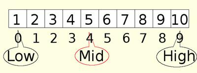

Binary Search
by Spas Arnaudov



In most cases Binary Search is faster than Linear Search. We use it when the array is sorted. The idea behind it is take advantage of the sorted elements. Rather than checking each element one by one, with binary search we check in which region of the array we should look. This way we discard big parts of the array with few checks.
1. Declare the array a[n]
2. Declare variable "value". That is the value that you search for.
3. User initialize "value"
4. Declare "low" and initialize it to 0
5. Declare "high" and initialize it to the length of the array minus one
6. We check whether "low" is less than "high"
7. Calculate "mid" with the formula: mid = (low + high) / 2
8. We investigate whether the element in the "mid" position is equal to the value
9. We investigate whether element in the mid position is greater than the value
10. Changing the value of low or high, depending on whether the "mid" is less or greater than "value".
11. Repeat the steps until we find the item or low is not less than high.
Declare your array and the variable "value" which will check whether it is contained in the array. The user inputs that value. Declare the auxiliary variables low,mid,high. They will remember indices, among which is the correct item. Low variable has a value of zero at the beginning; high = n - 1. These are respectively the first element and the last element of the array. Check whether the low is not less than high.
If so, then they have met and we have not found the item. Then we return minus one.
However, if this did not happen we introduce another variable - "mid". It will keep the index of the item which is located midway between low and high. Check whether the element on this position is the searched value. If so we return "mid".
If this is not the value that we are looking for, we check whether it is greater than value. If so, then the value is between "low" and "mid". In this case, high moves to the left of mid: high = mid - 1; and we repeat the search in the new range.
The other situation is if the value is greater than the mid element. In this case it is after mid. Then low = mid + 1; and we repeat the procedure.
int binarySearch(int array[], int size, int searchElement)
{
int first, middle, last;
first = 0;
last = size -1;
while(first <= last)
{
middle = (first+last)/2;
if(array[middle] < searchElement)
{
first = middle + 1; // element is located in the second part of subarray
}
else if(array[middle] > searchElement)
{
last = middle - 1; // element is located in the first part of subarray
}
else
{
return middle; // element found on this position
}
}
return -1; // element not found
}
Conclusion: Both, linear and binary search are often used. We should choose one of them, depending on the situation. If the array is not sorted we will have to use linear search and if it is sorted - binary search.
We may not know whether the array is sorted or not. Then we can take two actions. One is to sort and then use binary search. The other is to use linear search.
Do you learn better from video?
Learn faster with deeper understanding! |
 |
|
Did this help? Support me with your vote ;-) |
|
|
|
Did this help? |
|
|